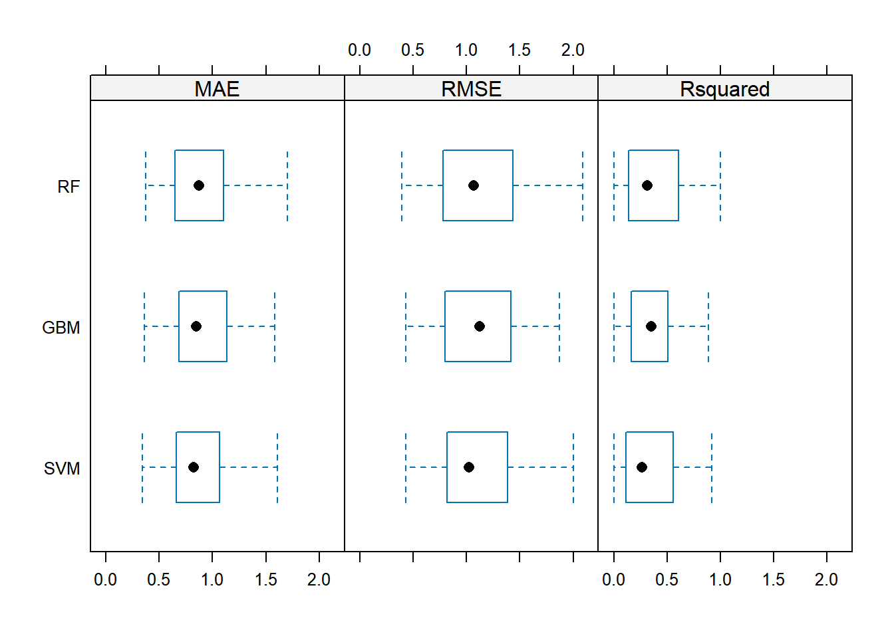
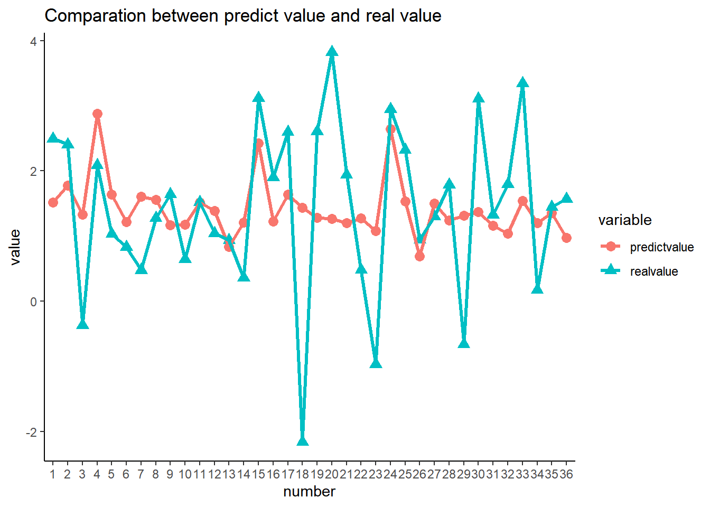
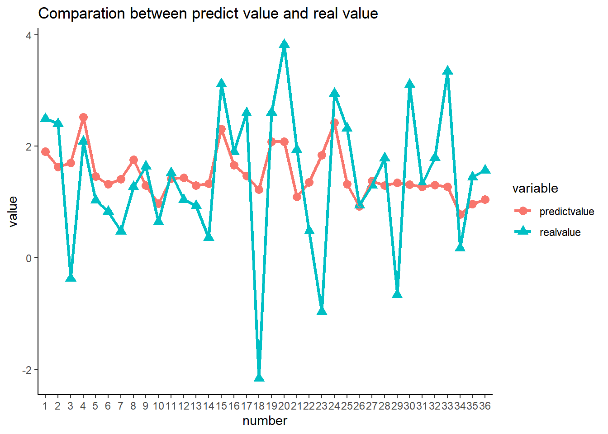
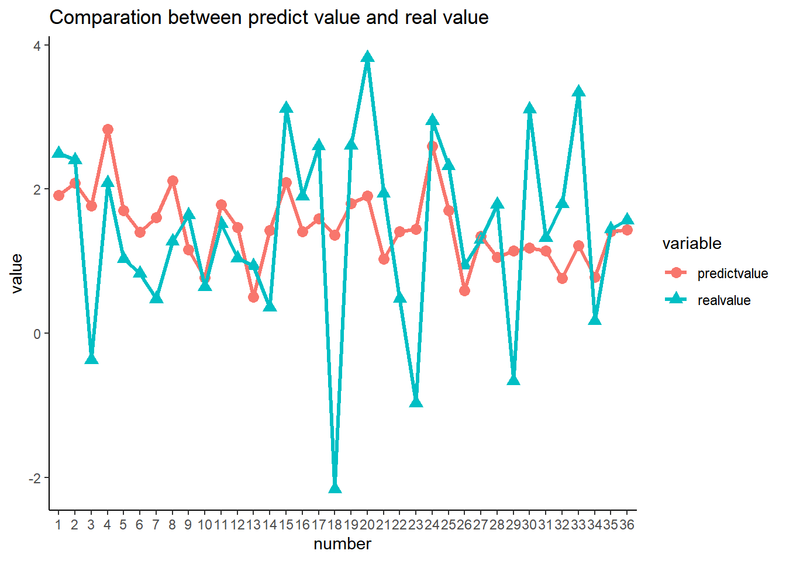
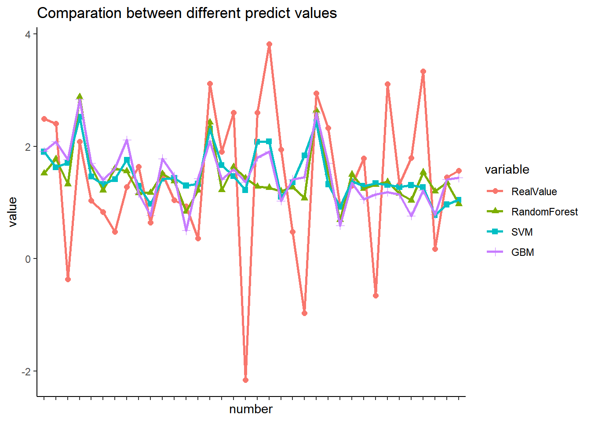
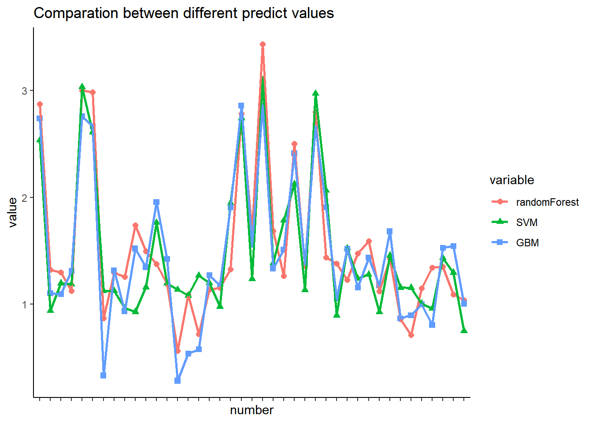

> library(readxl)连续型机器学习模型
✏️本节导读
本节考虑到由于不同种类的蛋白质作用机制、作用通路差别较大，以及数据之间可能存在非线性关系，于是考虑机器学习模型来提升拟合优度。
分别构建随机森林模型、梯度提升机模型、支持向量机模型，但效果并不理想，拟合优度仅有微弱提升。
载入数据
> EC50 <- read_excel("D:\\Rstudio\\Rmyfile\\Traditional Chinese Medicine\\ec50.xlsx",sheet = 6)处理自变量中存在的分类变量
将分类变量进行独热编码并与原数据合并
> library(caret)
> dummy_vars <- dummyVars(~ Species, data = EC50)
>
> # 使用predict函数和dummyVars对象来生成独热编码矩阵
>
> dummy_data <- predict(dummy_vars, newdata = EC50)
> dummy_EC50 <- data.frame(dummy_data,EC50[,-1])数据分割
> library(caret)> set.seed(1232)
> trainIndex <- createDataPartition(dummy_EC50$log10ec50,times=1,p=0.8,list=FALSE,groups=min(10,length(EC50$log10ec50)))
> Train <- dummy_EC50[trainIndex,]
> Test <- dummy_EC50[-trainIndex,]简单线性回归
> library(easystats)
> model <- lm(log10ec50~.-ec50,data = dummy_EC50)
> summary(model)
Call:
lm(formula = log10ec50 ~ . - ec50, data = dummy_EC50)
Residuals:
Min 1Q Median 3Q Max
-3.12757 -0.57544 0.09198 0.71236 3.10667
Coefficients: (1 not defined because of singularities)
Estimate Std. Error t value Pr(>|t|)
(Intercept) 5.705250 0.894998 6.375 1.58e-09 ***
SpeciesALK -0.215138 0.374173 -0.575 0.56605
SpeciesFLA 1.002742 0.382097 2.624 0.00945 **
SpeciesORG -0.105390 0.450112 -0.234 0.81515
SpeciesPHE 0.271202 0.406670 0.667 0.50572
SpeciesPPP 0.839988 0.426249 1.971 0.05034 .
SpeciesSAP 0.936018 0.409637 2.285 0.02351 *
SpeciesSTE 0.387236 0.655961 0.590 0.55573
SpeciesTER NA NA NA NA
AKT1 -0.084454 0.149827 -0.564 0.57370
PKC -0.259246 0.179452 -1.445 0.15034
PIK3CA 0.206708 0.165903 1.246 0.21445
PDE5 -0.295592 0.176336 -1.676 0.09547 .
AMPK -0.005946 0.229171 -0.026 0.97933
eNOS -0.292342 0.144029 -2.030 0.04390 *
SIRT1 0.136005 0.187839 0.724 0.47000
PDK1 -0.017912 0.148210 -0.121 0.90395
PRKG1 0.034131 0.184448 0.185 0.85341
APLNR -0.194230 0.206903 -0.939 0.34915
TGR5 0.236086 0.153745 1.536 0.12645
EDNRB -0.032738 0.186231 -0.176 0.86066
CYP1A1 -0.063554 0.063699 -0.998 0.31979
---
Signif. codes: 0 '***' 0.001 '**' 0.01 '*' 0.05 '.' 0.1 ' ' 1
Residual standard error: 1.141 on 175 degrees of freedom
Multiple R-squared: 0.2625, Adjusted R-squared: 0.1783
F-statistic: 3.115 on 20 and 175 DF, p-value: 2.969e-05最优子集回归
> model_final <- model|>
+ select_parameters()
> summary(model_final)
Call:
lm(formula = log10ec50 ~ SpeciesFLA + SpeciesPPP + SpeciesSAP +
PKC + PDE5 + eNOS + TGR5, data = dummy_EC50)
Residuals:
Min 1Q Median 3Q Max
-3.01670 -0.60264 0.07386 0.74992 2.94107
Coefficients:
Estimate Std. Error t value Pr(>|t|)
(Intercept) 5.4385 0.5905 9.211 < 2e-16 ***
SpeciesFLA 0.8571 0.2315 3.702 0.000281 ***
SpeciesPPP 0.7651 0.3122 2.451 0.015176 *
SpeciesSAP 0.8560 0.3152 2.716 0.007221 **
PKC -0.1911 0.1274 -1.500 0.135250
PDE5 -0.2865 0.1164 -2.462 0.014708 *
eNOS -0.3019 0.1235 -2.444 0.015430 *
TGR5 0.2179 0.1191 1.830 0.068822 .
---
Signif. codes: 0 '***' 0.001 '**' 0.01 '*' 0.05 '.' 0.1 ' ' 1
Residual standard error: 1.12 on 188 degrees of freedom
Multiple R-squared: 0.2356, Adjusted R-squared: 0.2071
F-statistic: 8.277 on 7 and 188 DF, p-value: 8.554e-09训练数据
> library(caret)
> #交叉验证
> fitControl <- trainControl(method = "repeatedcv",number = 30,repeats = 3)机器学习模型构建
GBM(梯度提升机)(基于决策树的集成学习算法)的核心思想是通过迭代的方式，逐步优化模型，每一步都尝试减少模型的残差误差，从而逐渐接近最优解。在每一步迭代中，GBM算法通过增加一个新的决策树来进一步优化模型，同时使用梯度下降算法来最小化残差误差。
SVM 支持向量机
RandomForest 随机森林
梯度提升机GBM
> set.seed(2024.11)
> gbmfit <- train(log10ec50~.-ec50,data = Train,method = "gbm",trControl=fitControl,verbose=FALSE)
> gbmfit Stochastic Gradient Boosting
160 samples
22 predictor
No pre-processing
Resampling: Cross-Validated (30 fold, repeated 3 times)
Summary of sample sizes: 154, 156, 155, 156, 154, 154, ...
Resampling results across tuning parameters:
interaction.depth n.trees RMSE Rsquared MAE
1 50 1.133618 0.3638800 0.9001328
1 100 1.163915 0.3527667 0.9207122
1 150 1.179919 0.3430091 0.9338863
2 50 1.153152 0.3295414 0.9128672
2 100 1.186039 0.3248243 0.9330707
2 150 1.212259 0.3041567 0.9558360
3 50 1.168970 0.3279048 0.9264794
3 100 1.205238 0.3136124 0.9623404
3 150 1.229551 0.3231229 0.9803674
Tuning parameter 'shrinkage' was held constant at a value of 0.1
Tuning parameter 'n.minobsinnode' was held constant at a value of 10
RMSE was used to select the optimal model using the smallest value.
The final values used for the model were n.trees = 50, interaction.depth =
1, shrinkage = 0.1 and n.minobsinnode = 10.随机森林Random Forest
> library(randomForest)
> set.seed(2024)
> rffit <- train(log10ec50~.-ec50,data = Train,method = "rf",trControl=fitControl,verbose=FALSE)
> rffit Random Forest
160 samples
22 predictor
No pre-processing
Resampling: Cross-Validated (30 fold, repeated 3 times)
Summary of sample sizes: 154, 156, 155, 156, 154, 154, ...
Resampling results across tuning parameters:
mtry RMSE Rsquared MAE
2 1.128893 0.3765522 0.8927256
11 1.163318 0.3481787 0.9170471
21 1.178710 0.3250263 0.9296655
RMSE was used to select the optimal model using the smallest value.
The final value used for the model was mtry = 2.支持向量机SVM
> library(kernlab)
> tuneGrid1 <- expand.grid(C = 2^(-2:5), sigma = c(0.01, 0.1, 1))
> set.seed(2024.13)
> svmfit <- train(log10ec50~.-ec50,data = Train,method = "svmRadial",trControl=fitControl,verbose=FALSE,tuneGrid= tuneGrid1)
> svmfit Support Vector Machines with Radial Basis Function Kernel
160 samples
22 predictor
No pre-processing
Resampling: Cross-Validated (30 fold, repeated 3 times)
Summary of sample sizes: 154, 156, 155, 156, 154, 154, ...
Resampling results across tuning parameters:
C sigma RMSE Rsquared MAE
0.25 0.01 1.114817 0.3290295 0.8840081
0.25 0.10 1.126874 0.2728372 0.8864627
0.25 1.00 1.145490 0.2866486 0.9093973
0.50 0.01 1.106094 0.3250227 0.8731409
0.50 0.10 1.144269 0.2806425 0.8968490
0.50 1.00 1.128325 0.2933209 0.8884422
1.00 0.01 1.108713 0.3299019 0.8727065
1.00 0.10 1.201813 0.2793701 0.9501702
1.00 1.00 1.132500 0.3130900 0.8877241
2.00 0.01 1.125001 0.3081330 0.8877209
2.00 0.10 1.232938 0.2831844 0.9764720
2.00 1.00 1.143035 0.3033660 0.8962083
4.00 0.01 1.156479 0.2866684 0.9166405
4.00 0.10 1.244790 0.2796459 0.9853496
4.00 1.00 1.152324 0.2965280 0.9048406
8.00 0.01 1.168273 0.3080343 0.9274460
8.00 0.10 1.289098 0.2854485 1.0250625
8.00 1.00 1.152679 0.2960620 0.9050780
16.00 0.01 1.199418 0.3120593 0.9577236
16.00 0.10 1.307431 0.2957023 1.0449073
16.00 1.00 1.152679 0.2960620 0.9050780
32.00 0.01 1.265304 0.2974215 1.0119017
32.00 0.10 1.319630 0.2959489 1.0526886
32.00 1.00 1.152679 0.2960620 0.9050780
RMSE was used to select the optimal model using the smallest value.
The final values used for the model were sigma = 0.01 and C = 0.5.比较几种方法的预测效果

均方误差MSE
> MSE <- function(model,Test){
+ predict <- predict(model,newdata = Test)
+ real <- Test$log10ec50
+ # 计算MSE
+ mse_lm <- mean((predict - real)^2)
+ print(paste(" MSE:", mse_lm))
+ sst <-sum((real-mean(real))^2)
+ sse <- sum((predict-real)^2)
+ rsq <-1-sse/sst
+ print(paste("R-square:", rsq))
+ }> MSE(rffit,Test) [1] " MSE: 1.38425553942827"
[1] "R-square: 0.122646283157883"> MSE(svmfit,Test) [1] " MSE: 1.35111843953737"
[1] "R-square: 0.143648877640301"> MSE(gbmfit,Test) [1] " MSE: 1.41067131279206"
[1] "R-square: 0.10590372639445"作图展示结果
下图展示了三个机器学习模型的预测值与原来真实值之间的差别。
> Keshihua <- function(model,Test){
+ library(reshape2)
+ library(ggplot2)
+ predict <- predict(model,newdata = Test)
+ real <- Test$log10ec50
+ Comparation <- data.frame(predictvalue = predict , realvalue = real,number = factor(c(1:nrow(Test)))) |>
+ melt(id.vars = "number")
+ a <- ggplot(Comparation, aes(x=number,y = value,color = variable,group=variable))+
+ geom_point(aes(shape=variable),size=3)+
+ geom_line(lwd=1.2)+theme_classic()+
+ labs(title = "Comparation between predict value and real value")
+ print(a)
+ }RF
> Keshihua(rffit,Test)
SVM
> Keshihua(svmfit,Test)
GBM
> Keshihua(gbmfit,Test)
所有方法整合比较
> RF_predict <- predict(rffit,newdata = Test)
> GBM_predict <- predict(gbmfit,newdata = Test)
> SVM_predict <- predict(svmfit,newdata = Test)
> Comparation <- data.frame(RealValue = Test$log10ec50,RandomForest = RF_predict , SVM = SVM_predict,GBM = GBM_predict,number = factor(c(1:length(RF_predict)))) |>
+ melt(id.vars = "number")
> ggplot(Comparation, aes(x=number,y = value,color = variable,group=variable))+
+ geom_point(aes(shape=variable),size=2)+
+ geom_line(lwd=1)+theme_classic()+
+ theme(axis.text.x = element_blank())+ # 去掉X轴刻度标签
+ labs(title = "Comparation between different predict values")
预测新值
> saponin_predict_all <- read_excel("D:\\Rstudio\\Rmyfile\\Traditional Chinese Medicine\\NEW_predict.xlsx")GBM
> set.seed(2024.11)
> gbmfit <- train(log10ec50~.,data = Train[,-22],method = "gbm",trControl=fitControl,verbose=FALSE)
> gbmfit Stochastic Gradient Boosting
160 samples
21 predictor
No pre-processing
Resampling: Cross-Validated (30 fold, repeated 3 times)
Summary of sample sizes: 154, 156, 155, 156, 154, 154, ...
Resampling results across tuning parameters:
interaction.depth n.trees RMSE Rsquared MAE
1 50 1.133618 0.3638800 0.9001328
1 100 1.163915 0.3527667 0.9207122
1 150 1.179919 0.3430091 0.9338863
2 50 1.153152 0.3295414 0.9128672
2 100 1.186039 0.3248243 0.9330707
2 150 1.212259 0.3041567 0.9558360
3 50 1.168970 0.3279048 0.9264794
3 100 1.205238 0.3136124 0.9623404
3 150 1.229551 0.3231229 0.9803674
Tuning parameter 'shrinkage' was held constant at a value of 0.1
Tuning parameter 'n.minobsinnode' was held constant at a value of 10
RMSE was used to select the optimal model using the smallest value.
The final values used for the model were n.trees = 50, interaction.depth =
1, shrinkage = 0.1 and n.minobsinnode = 10.Random Forest
> library(randomForest)
> set.seed(2024)
> rffit <- train(log10ec50~.,data = Train[,-22],method = "rf",trControl=fitControl,verbose=FALSE)
> rffit Random Forest
160 samples
21 predictor
No pre-processing
Resampling: Cross-Validated (30 fold, repeated 3 times)
Summary of sample sizes: 154, 156, 155, 156, 154, 154, ...
Resampling results across tuning parameters:
mtry RMSE Rsquared MAE
2 1.128893 0.3765522 0.8927256
11 1.163318 0.3481787 0.9170471
21 1.178710 0.3250263 0.9296655
RMSE was used to select the optimal model using the smallest value.
The final value used for the model was mtry = 2.SVM
> library(kernlab)
> tuneGrid1 <- expand.grid(C = 2^(-2:5), sigma = c(0.01, 0.1, 1))
> set.seed(2024.13)
> svmfit <- train(log10ec50~.,data = Train[,-22],method = "svmRadial",trControl=fitControl,verbose=FALSE,tuneGrid= tuneGrid1)
> svmfit Support Vector Machines with Radial Basis Function Kernel
160 samples
21 predictor
No pre-processing
Resampling: Cross-Validated (30 fold, repeated 3 times)
Summary of sample sizes: 154, 156, 155, 156, 154, 154, ...
Resampling results across tuning parameters:
C sigma RMSE Rsquared MAE
0.25 0.01 1.114817 0.3290295 0.8840081
0.25 0.10 1.126874 0.2728372 0.8864627
0.25 1.00 1.145490 0.2866486 0.9093973
0.50 0.01 1.106094 0.3250227 0.8731409
0.50 0.10 1.144269 0.2806425 0.8968490
0.50 1.00 1.128325 0.2933209 0.8884422
1.00 0.01 1.108713 0.3299019 0.8727065
1.00 0.10 1.201813 0.2793701 0.9501702
1.00 1.00 1.132500 0.3130900 0.8877241
2.00 0.01 1.125001 0.3081330 0.8877209
2.00 0.10 1.232938 0.2831844 0.9764720
2.00 1.00 1.143035 0.3033660 0.8962083
4.00 0.01 1.156479 0.2866684 0.9166405
4.00 0.10 1.244790 0.2796459 0.9853496
4.00 1.00 1.152324 0.2965280 0.9048406
8.00 0.01 1.168273 0.3080343 0.9274460
8.00 0.10 1.289098 0.2854485 1.0250625
8.00 1.00 1.152679 0.2960620 0.9050780
16.00 0.01 1.199418 0.3120593 0.9577236
16.00 0.10 1.307431 0.2957023 1.0449073
16.00 1.00 1.152679 0.2960620 0.9050780
32.00 0.01 1.265304 0.2974215 1.0119017
32.00 0.10 1.319630 0.2959489 1.0526886
32.00 1.00 1.152679 0.2960620 0.9050780
RMSE was used to select the optimal model using the smallest value.
The final values used for the model were sigma = 0.01 and C = 0.5.预测
下面显示的表格的最后三列即为三种机器学习方法的预测结果。
> rffit_predict <- predict(rffit,newdata = saponin_predict_all)
> svmfit_predict <- predict(svmfit,newdata = saponin_predict_all)
> gbmfit_predict <- predict(gbmfit,newdata = saponin_predict_all)> saponin_predict_all <- cbind(saponin_predict_all,rffit_predict,svmfit_predict,gbmfit_predict)
> saponin_predict_all <- as.data.frame(saponin_predict_all)
> saponin_predict_all[10,] SpeciesALK SpeciesFLA SpeciesORG SpeciesPHE SpeciesPPP SpeciesSAP SpeciesSTE
10 1 0 0 0 0 0 0
SpeciesTER AKT1 PKC PIK3CA PDE5 AMPK eNOS SIRT1 PDK1 PRKG1 APLNR TGR5
10 0 5.974 7.517 7.81 9.12 9.372 8.101 9.978 9.131 6.715 7.72 9.659
EDNRB CYP1A1 rffit_predict svmfit_predict gbmfit_predict
10 7.67 6.149 1.739291 0.929666 1.52114作图展示预测结果
> Comparation <- data.frame(randomForest = rffit_predict , SVM = svmfit_predict,GBM = gbmfit_predict,number = factor(c(1:length(rffit_predict)))) |>
+ melt(id.vars = "number")
> ggplot(Comparation, aes(x=number,y = value,color = variable,group=variable))+
+ geom_point(aes(shape=variable),size=2)+
+ geom_line(lwd=1)+theme_classic()+
+ theme(axis.text.x = element_blank())+ # 去掉X轴刻度标签
+ labs(title = "Comparation between different predict values")